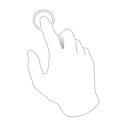
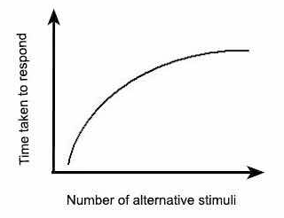
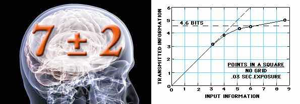
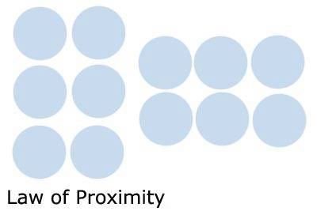
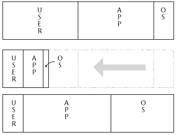
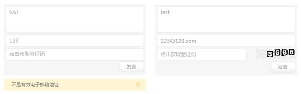

交互规范 - 常见交互原则 / Interaction Specification

Create by Skyfire At Beijing,P.R.China
Compiled in 2016-07-19 17:21:47
简约 · 极致 · 传承
交互原则
说明
备注
3秒钟原则
现代人的生活节奏都很快，网页间的切换速度也越来越快。所谓"3秒钟原则"，就是要在极短的时间内展示重要信息，给用户留下深刻的第一印象。当然，这里的3秒只是一个象征意义上的快速浏览表述，在实际浏览网页的时候，并非真的严格遵守3秒。
F
据《眼球轨迹的研究》得出，在一般的新闻网站，用户关注的是最中间靠上的内容，可以用一个字母F表示，这种基于F图案的浏览行为有3个特征：首先，用户会在内容区的上部进行横向浏览。其次，用户视线下移一段距离后在小范围再次横向浏览。最后，用户在内容区的左侧做快速纵向浏览。
遵循这个F形字母，网站设计者应该把最重要的信息放在这个区域，才能给访问者在3秒钟的极短时间内留下更加鲜明的第一印象。因此，在设计互联网产品的页面时，用户等待时间越少，用户体验越好。合理的运用这种阅读行为，对于产品设计会有很好的启发意义。
3次点击原则
根据这个原则，如果用户在3次点击之后，仍然无法找到信息和完成网站功能时，用户就会放弃现在的网站。这个原则给我们的启示是，产品应有明确的导航、逻辑架构。
在网络探索的过程中，点击的次数往往是无关紧要的，我们需要在产品中给用户暗示：他们总是能知道现在在哪里、以前去过哪里、以后可以去哪里。

7±2原则
根据乔治米勒的研究，人类短期记忆一般一次只能记住5-9个事物。7±2原则，即由于人类大脑处理信息的能力有限，它会将复杂信息划分成块和小的单元。这一事实经常被用来作为限制导航菜单选项到7个的论据。这对于页面布局的参考意义如下：
避免喧宾夺主，将页面需要完成的主题功能，放在页面首要主题位置。对于那些有必要但不是必需的功能，应尽量避免强行抢占主体位置，以避免影响用户最常用、最熟悉功能的使用。
一个页面的信息量应恰到好处，在提供给用户阅读的区域，尽量不要超出其承载量。
1956 年乔治米勒对短时记忆能力进行了定量研究，他发现人类头脑最好的状态能记忆含有7(±2)项信息块，在记忆了 5-9 项信息后人类的头脑就开始出错。与席克定律类似，神奇数字 7±2 法则也经常被应用在移动应用交互设计上，如应用的选项卡不会超过 5 个。
费茨原则
费茨定律对于互联网产品设计具有很好的启发意义。这个定律提出使用指点设备到达一个目标的时间同两个因素有关：设备当前位置和目标位置的距离(D)、目标的大小(S)。在互联网产品的互动环节，用户和鼠标的移动应该是非常密切的。黄彦鸣和大家一起来设想，要从A点移动到B点，如何在有限的距离放置内容、以更实用的方式最大化内容可及性、快速提高内容点击率，对于用户体验的价值是非常重要的。
在互联网产品中，产品经理经常会遇到类似的问题。比如，在Web页面中经常要使用分页功能，这本来是一件给用户带来视觉享受的事情。但是，许多分页的页码数字特别小。费茨公式为设计交互提供了一个依据，设计一些粗大、感性的分页页码数字，让用户快速命中目标，也就是说在一个有限的范围内，要让目标尽可能无处不在，带给用户舒适的体验。
这些都是比较实用的互联网产品原则。产品经理在欣赏的过程中，也需要尝试用这些原则去挖掘、归纳，这样更容易领略产品带来的无穷美感。
交互设计之父-阿兰·库珀Alan Cooper说过：除非有更好的选择，否则就遵从标准。
费茨法则
(Fitts’ Law)
定律内容：从一个起始位置移动到一个最终目标所需的时间由两个参数来决定，到目标的距离和目标的大小(上图中的 D与 W)，用数学公式表达为时间 T = a + b log2(D/W+1)。
它是 1954 年保罗.菲茨首先提出来的，用来预测从任意一点到目标中心位置所需时间的数学模型，在人机交互(HCI)和设计领域的影响却最为广泛和深远。 新的 Windows 8 中由开始菜单到开始屏幕的转变背后也可以看作是该定律的应用。
菲茨定律的启示：
按钮等可点击对象需要合理的大小尺寸。
屏幕的边和角很适合放置像菜单栏和按钮这样的元素，因为边角是巨大的目标，它们无限高或无限宽，你不可能用鼠标超过它们。即不管你移动了多远，鼠标最终会停在屏幕的边缘，并定位到按钮或菜单的上面。
出现在用户正在操作的对象旁边的控制菜单(右键菜单)比下拉菜单或工具栏可以被打开得更快，因为不需要移动到屏幕的其他位置。
希克法则
(Hick’s Law)
定律内容：一个人面临的选择(n)越多，所需要作出决定的时间(T)就越长。用数学公式表达为反应时间 T=a+b log2(n)。在人机交互中界面中选项越多，意味着用户做出决定的时间越长。比如比起 2 个菜单，每个菜单有 5 项，用户会更快得从有 10 项的 1 个菜单中做出选择。
席克定律多应用于软件/网站界面的菜单及子菜单的设计中，在移动设备中也比较适用。
接近法则
(The Law Of Proximity)
根据格式塔(Gestalt)心理学：当对象离得太近的时候，意识会认为它们是相关的。在交互设计中表现为一个提交按钮会紧挨着一个文本框，因此当相互靠近的功能块是不相关的话，就说明交互设计可能是有问题的。
泰思勒定律/复杂性守恒定律
(Tesler’s Law)
该定律认为每一个过程都有其固有的复杂性，存在一个临界点，超过了这个点过程就不能再简化了，你只能将固有的复杂性从一个地方移动到另外一个地方。如对于邮箱的设计，收件人地址是不能再简化的，而对于发件人却可以通过客户端的集成来转移它的复杂性。
防错原则(新乡重夫)
放错原则认为大部分的意外都是由设计的疏忽，而不是人为操作疏忽。通过改变设计可以把过失降到最低。该原则最初是用于工业管理的，但在交互设计也十分适用。如在硬件设计上的 USB 插槽；而在界面交互设计中也是可以经常看到，如当使用条件没有满足时，常常通过使功能失效来表示(一般按钮会变为灰色无法点击)，以避免勿按。
如下图所示极客公园的评论功能快，在留言框没有内容或邮箱格式不正确的时候是无法获取验证码的，只有两者都满足了才可以。
简单有效原理/奥卡姆剃刀原理
(Occam’s Razor)
这个原理被称为"如无必要，勿增实体"，即如有两个功能相等的设计，那么选择最简单的。在极客公开课・走进 UC 中 UC 浏览器产品经理苏剑南在"UC 浏览器 For Android 产品设计思考"演讲中也有讲到该原理的应用，"如果 UC 手机浏览器要发布第一个版本 UC 1.0，你会选择哪五个功能？‘’
目标区域

S
D
Target
W

D





